Workforce Intelligence Platform
Screenshot packet for submission. This set captures the landing page, login, dashboard, employee workflow, approval workflow, notifications, admin access, and AI scoring views.
1. Landing Page
Marketing entry screen with product framing, KPI messaging, and polished SaaS styling.
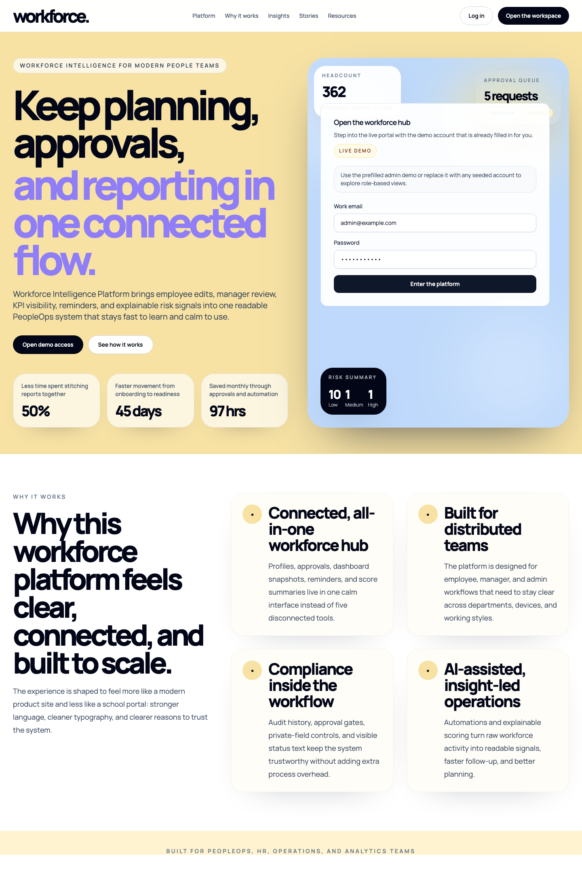
2. Login Page
Accessible sign-in form with visible labels and plain-language helper text.
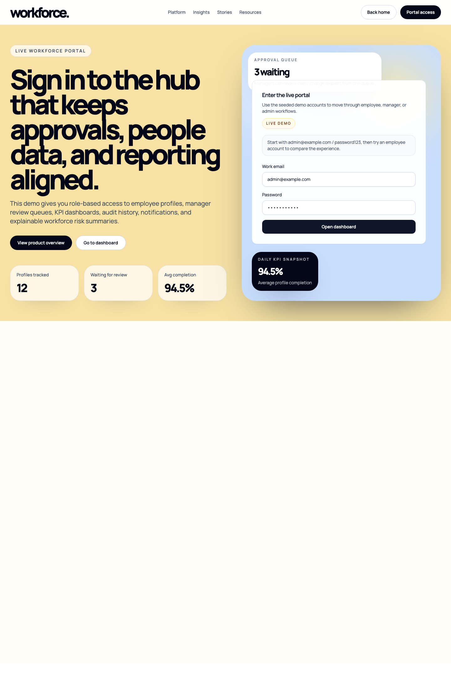
3. Dashboard
Main KPI dashboard with the insight centerpiece, workforce analytics, and recent activity.
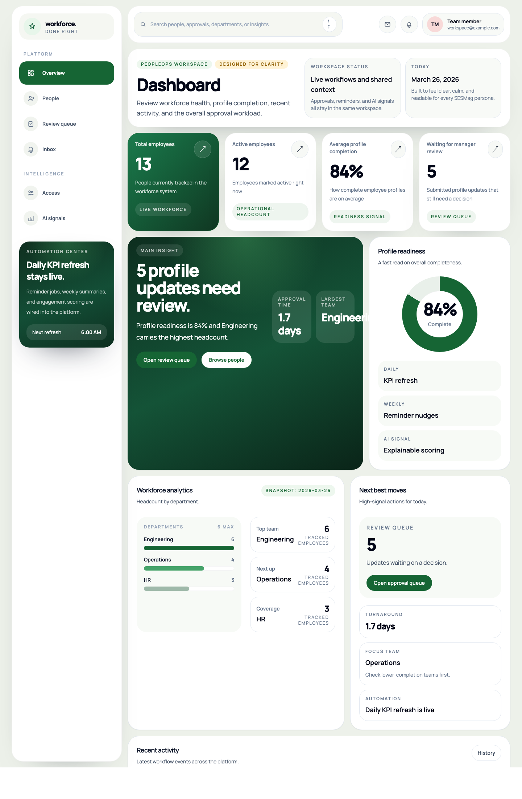
4. Employee Directory
People directory with readiness bars, team coverage, and role-aware visibility.
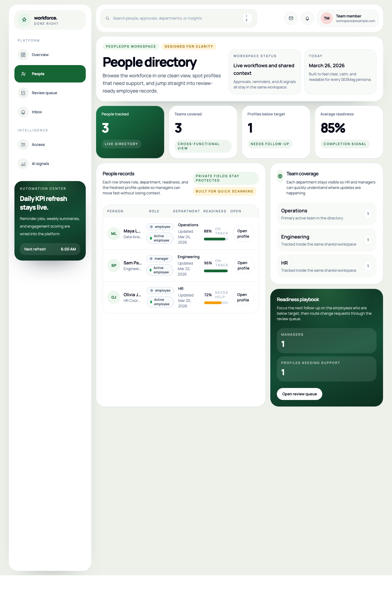
5. Employee Profile
Detailed employee record with public summary, private details, and AI completion signal.
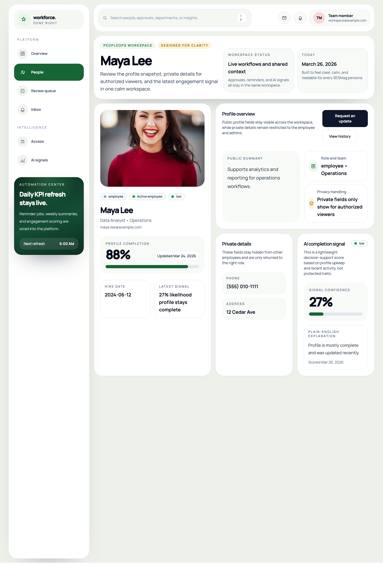
6. Profile Edit Flow
Update request form showing the manager review process before changes go live.
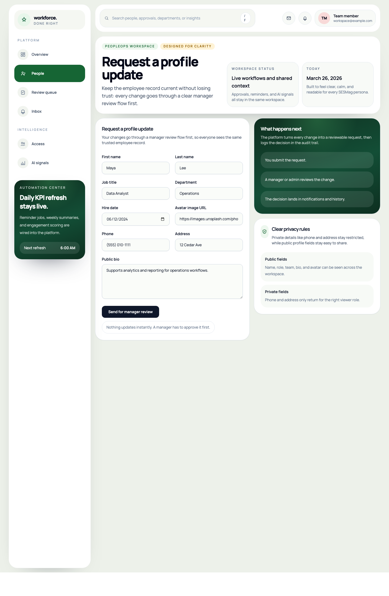
7. Profile History
Audit trail showing the sequence of write actions in plain language.
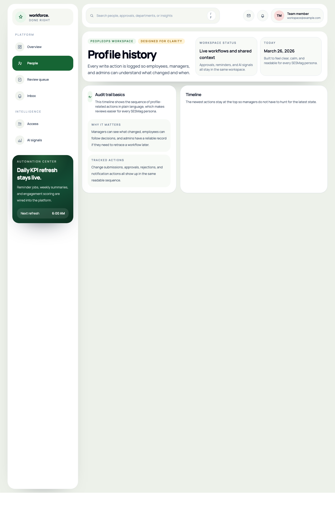
8. Approval Queue
Manager review workspace with before-and-after change summaries.
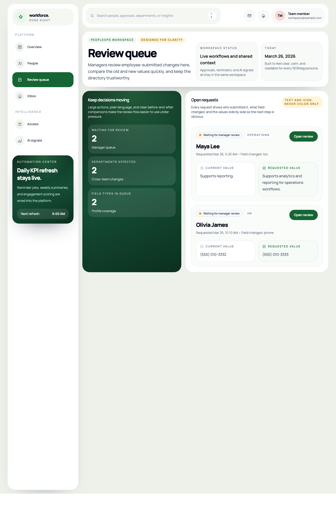
9. Approval Detail
Single-request review screen with decision notes and approve or reject actions.
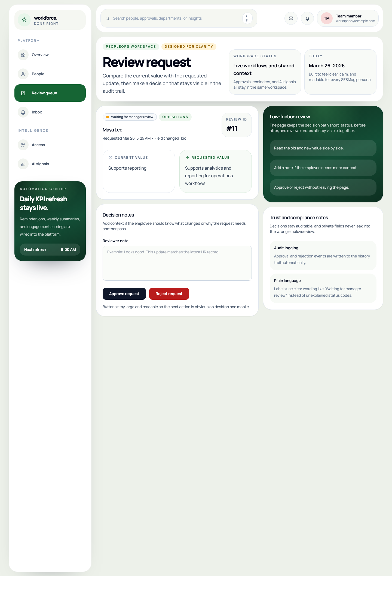
10. Notifications
Inbox view for reminders, decisions, and profile completion nudges.
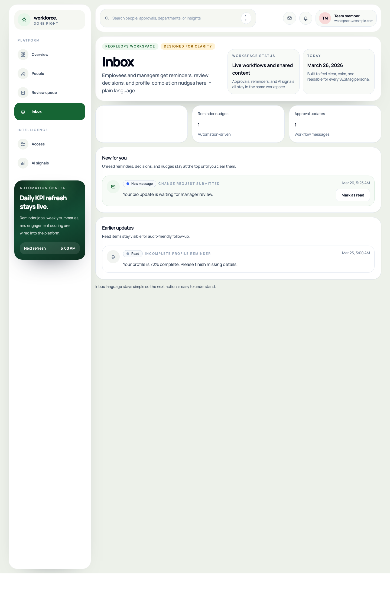
11. Admin Users
Admin access view showing account roles, departments, and workspace permissions.
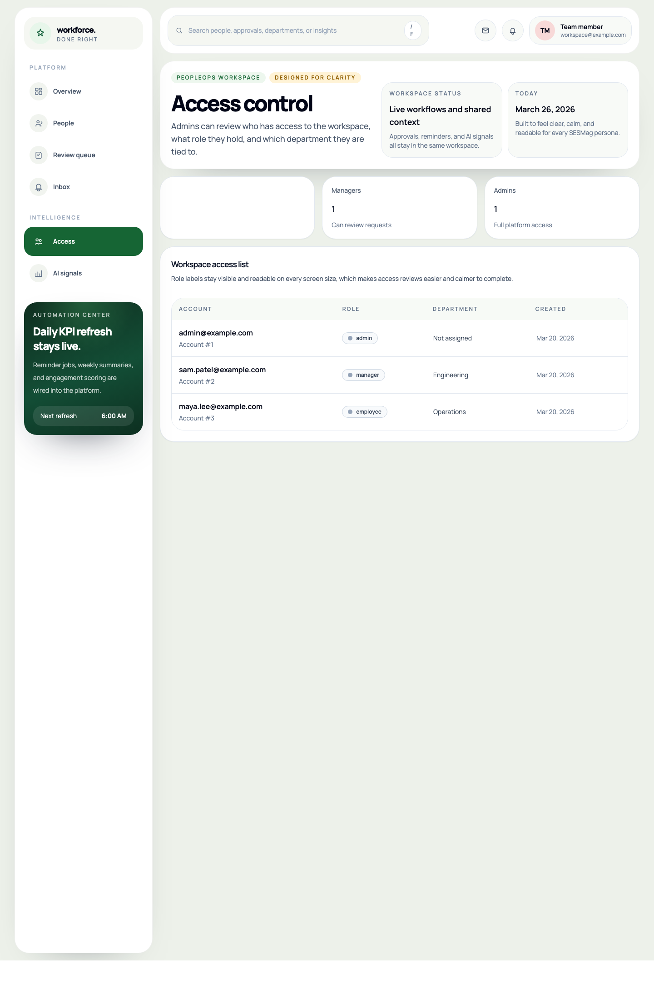
12. AI Scores Dashboard
Explainable completion-risk view showing distribution, model inputs, and admin-facing guidance.
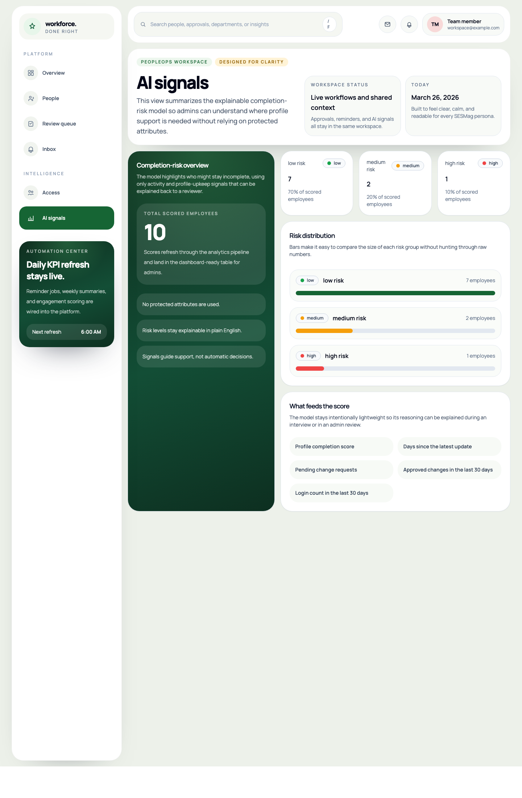